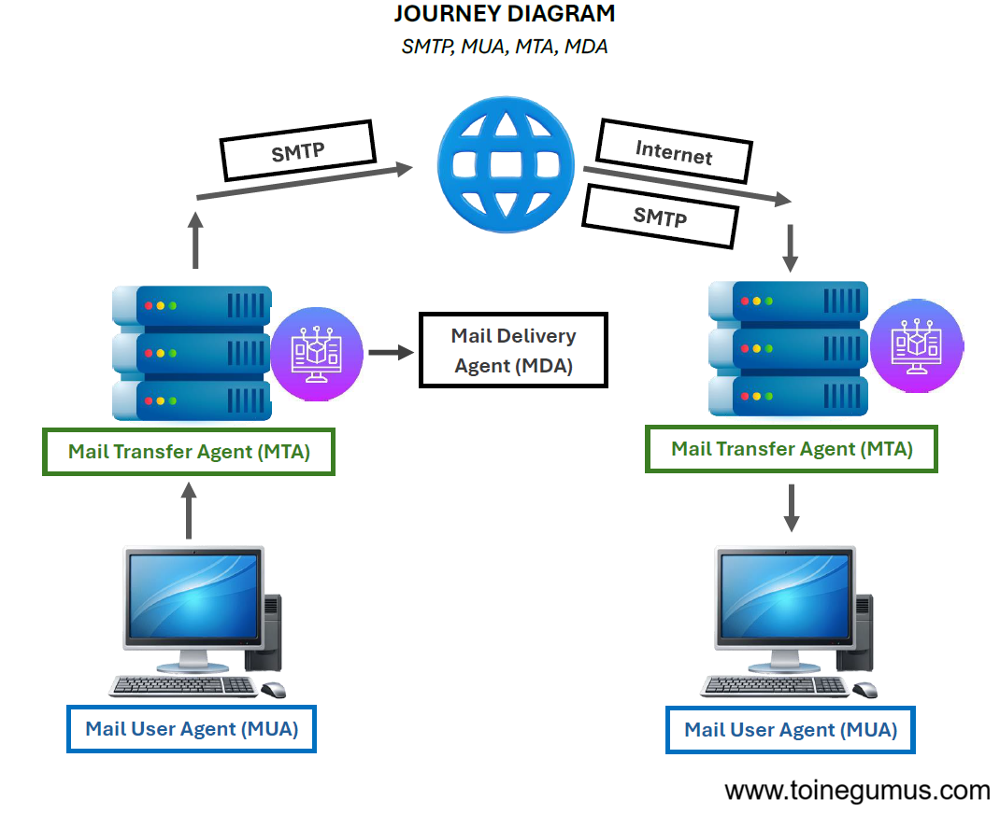
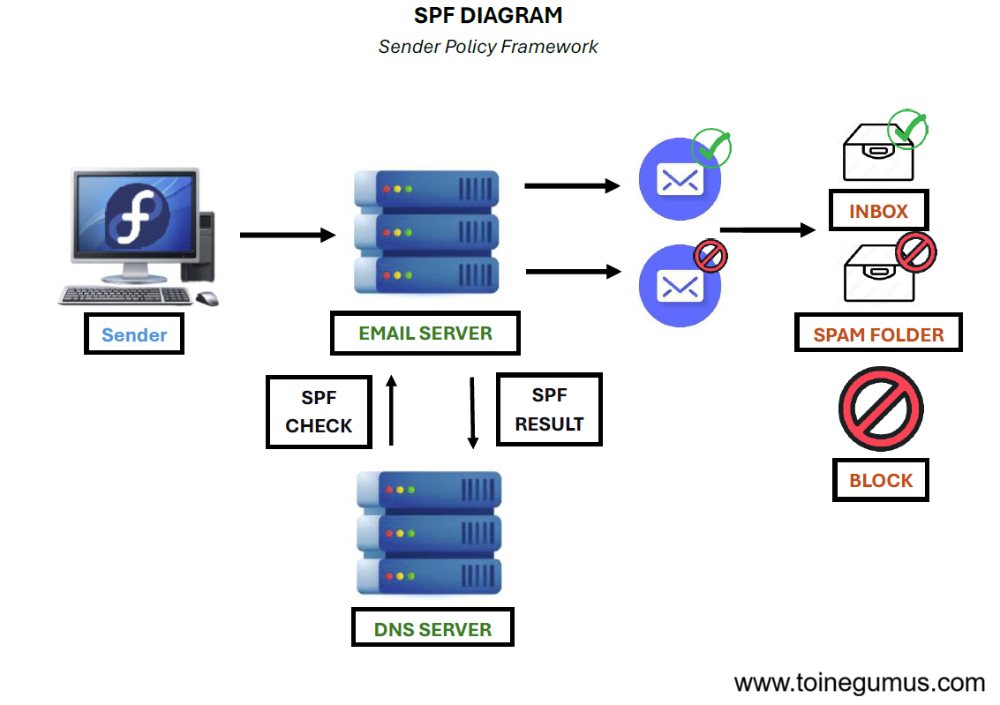
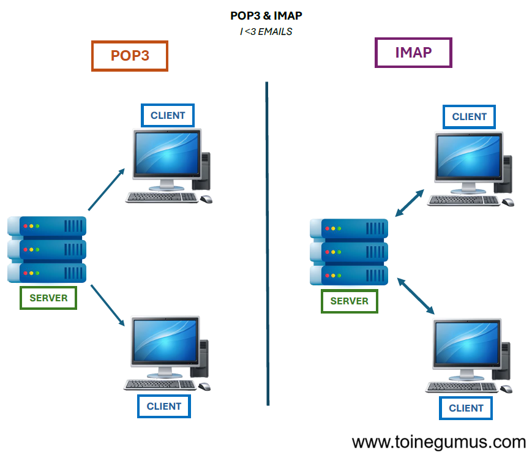

We use it every day, yet email is one of the oldest technologies on the web (the first email was sent in 1971). As we saw in the anatomy of a web request, the Internet relies on well-defined protocols. Sending emails is no exception to the rule, it relies on SMTP.
SMTP
Simple Mail Transfer Protocol (SMTP) is the protocol used to send messages from one server to another. It defines how a sending server communicates with a receiving server to transfer an email etc...
Unlike instant messaging, email is not "pushed" directly to the recipient, or with only one server as an intermediary. It goes through a series of relays.
The Step-by-Step Journey
When you click "Send," the process begins with the MUA (Mail User Agent), which is your email client (like Infomaniak Mail or Proton Mail) preparing the message. Next, the MTA (Mail Transfer Agent) takes over. Your sending server receives the email and looks for the recipient's server using the MX DNS record (go see my article on DNS I PROMISE it's interesting). During The Transfer, your MTA talks directly to the destination MTA via SMTP to hand over the message. Finally, the MDA (Mail Delivery Agent) receives it and stores the email safely in the recipient's inbox, here is a diagram to better illustrate this:

Why do my emails go to spam?
The original SMTP had no security, meaning anyone could pretend to be anyone (yes yes, changing the sender is child's play). To fix this, several main defenses were created. The first step is Ownership Verification, which involves proving to providers like Infomaniak or Proton that you actually own the domain. Then, protocols like SPF, DKIM, and DMARC are implemented as essential layers for preventing email spoofing and ensuring authenticity.

POP3 vs IMAP
Once the email arrives, you need a way to read it (that would be nice anyway). That's where two other protocols come in. You can use POP3, which downloads the email to your device and usually deletes it from the server, making it perfect for a single device. Alternatively, you can use IMAP, which synchronizes messages so that what you see is an exact reflection of what is on the server, making it ideal for using multiple devices.

(I hope you enjoyed this article Mr. Amarcher, know that by doing this research my interest in how email protocols work has really grown, very interesting!)
Glossary
SMTP Relay: An intermediate server that transfers emails.
Spoofing: A technique used to impersonate a sender.
Port 587: The standard port recommended today for secure email sending. (Yes I didn't know where to put this in the article so I'm mentioning it here...)